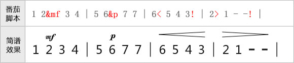
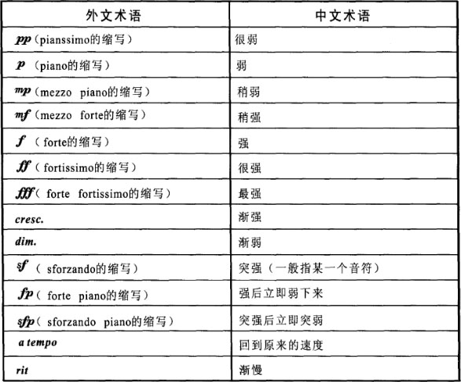
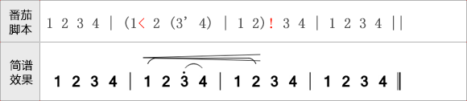
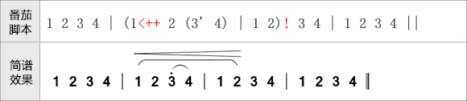

力度术语可以在音符后面加上“&+缩写字母”的方式加上，例如mp写上“&mp”即可。
渐强渐弱符号，则使用“<”或“>”表示起点，终点直接使用“!”作为结束记号。
如下图：

番茄脚本支持的力度术语一览表：

渐强减弱符号与连音线等符号重叠问题
有些时候，渐强减弱符会与连音符重叠，此时可以在渐强减弱符的“<”或“>”后加上“+”号进行调整，“+”号越多，渐强减弱符越上移。
示例如下：
图1、渐强减弱与连音线重叠问题:

图2、通过“+”号调整渐强减弱符的位置

番茄简谱将在以后实现渐强减弱符号位置的自动调整，在此之前请使用“+”号手动调整。